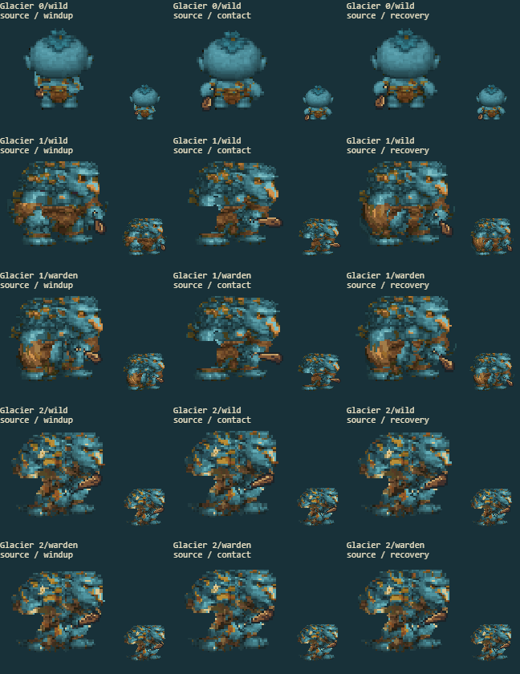
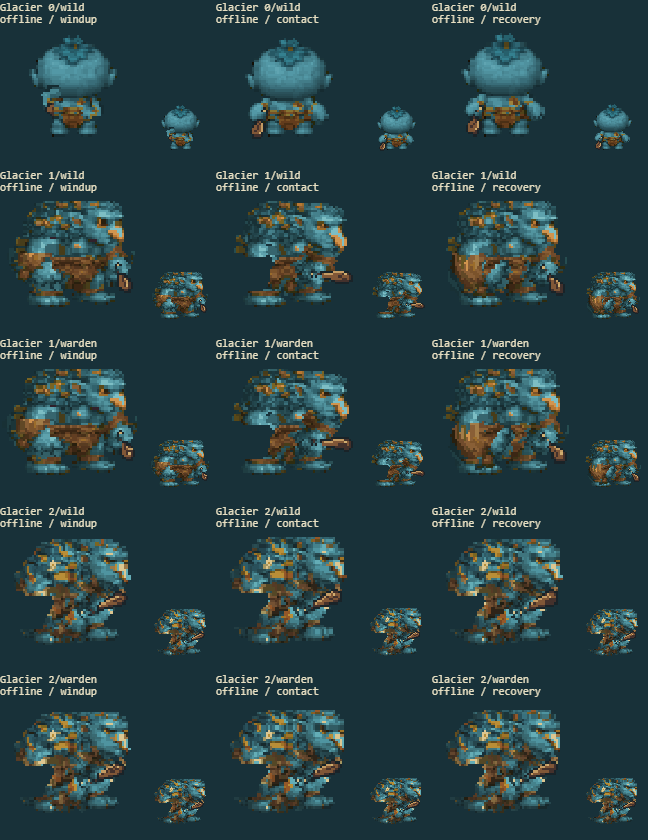

10 separate fights cover every available evolution/path in the source game and rebuilt offline game. The arena keeps combat effects. The other panels show the actual battle sprite at native and enlarged size, before the hit flash.
Full game screenshot · Contact
| Factor | Result | Observed |
|---|---|---|
| Shoulder motion and protected head | pass | The bulky blue shoulder follows the club arm while the pale muzzle remains steady. |
| Body and clothing backing | pass | The tan leather torso remains filled behind the arm through windup and the extended attack. |
| Authored materials and palette | pass | Blue skin highlights do not bleed into the tan leather; the original blue and brown textures remain distinct. |
| Connected limbs and equipment | pass | The club grip and thick upper arm remain connected through attack and return in both builds. |
| Complete silhouette and cell margins | pass | The broad apex rear, shoulder outline and feet remain complete without clipping or a duplicate limb. |
source

offline

All eight facings: art form 0 · art form 1 · art form 2